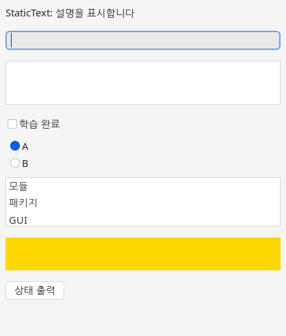
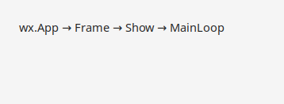
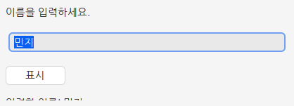
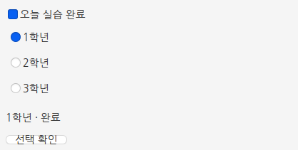
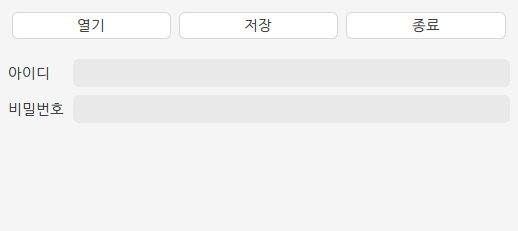
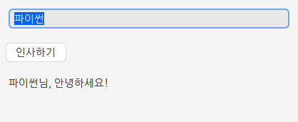
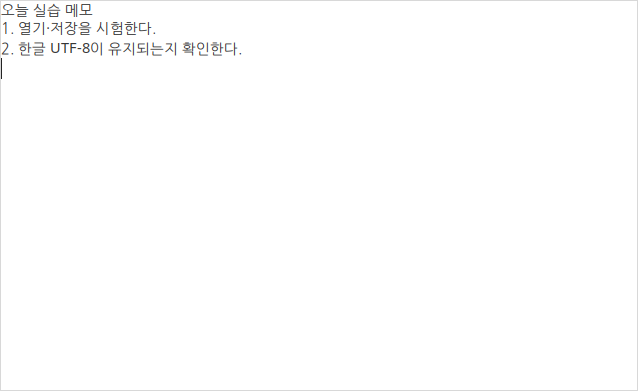
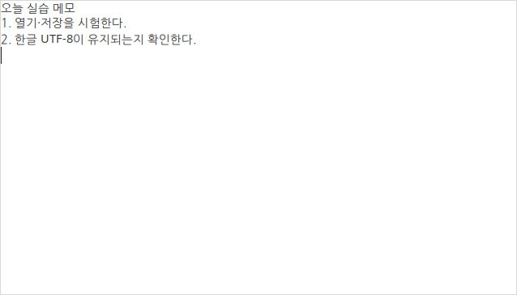
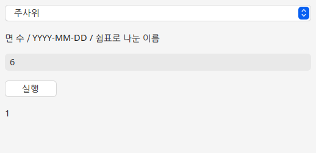

wx.App → Frame·Panel·Sizer → Bind → Show → MainLoop본편 Tk·pack·command·mainloop를 wx 이름으로 옮긴 순서입니다. 브라우저에서는 창이 뜨지 않습니다.
 인공지능 파이썬 실무
인공지능 파이썬 실무Ⅱ. GUI 프로그래밍 · 주제 10 / 11
본편에서 익힌 창·위젯·배치·이벤트·메모장을 운영체제 위젯으로 옮깁니다.
대단원 Ⅱ. GUI 프로그래밍 교과서 40–59쪽
추가 실습 · 교과서 밖 확장
이 웹 주제의 연계 범위: 부록 · 확장 학습
웹 학습 주제 10 / 11
본편에서 익힌 창·위젯·배치·이벤트·메모장을 운영체제 위젯으로 옮깁니다.
| 역할 | tkinter | wxPython |
|---|---|---|
| 앱·창 | Tk() | wx.App() + wx.Frame |
| 설명 글 | Label | wx.StaticText |
| 한 줄 입력 | Entry | wx.TextCtrl |
| 여러 줄 | Text | wx.TextCtrl(TE_MULTILINE) |
| 버튼 클릭 | command= | Bind(EVT_BUTTON) |
| 배치 | pack / grid | BoxSizer / FlexGridSizer |
| 이벤트 루프 | mainloop() | MainLoop() |
BEFORE THE CODE
새 이름·속성이 코드에 나오기 전에 짧게 봅니다. 외우기보다 역할을 먼저 구별하세요.
wx.App → Frame·Panel·Sizer → Bind → Show → MainLoop본편 Tk·pack·command·mainloop를 wx 이름으로 옮긴 순서입니다. 브라우저에서는 창이 뜨지 않습니다.
본편을 다시 배우는 길이 아닙니다. 같은 앱을 세 번째 툴킷으로 대조하는 확장입니다.
사이트 안의 Python입니다. C 확장인 wxPython을 불러올 수 없어 PC 실습으로 표시합니다.
HISTORY / VIDEO
wxWidgets는 1992년 Julian Smart가 wxWindows로 시작했습니다. 운영체제 위젯을 쓰므로 창 모양이 그 환경의 기본 앱과 가깝습니다. wxPython은 이를 파이썬에서 붙입니다.
RESULT PREVIEW

이 페이지는 본편 tkinter/PySide6 경로를 대체하지 않습니다. 같은 인사·위젯 도감·배치·이벤트·메모장·생활 도우미를 wxPython으로 다시 구성합니다. 수행평가의 기본 도구는 여전히 tkinter입니다.
브라우저의 Pyodide에는 wxPython이 포함되지 않습니다. 웹 실습실은 문법을 확인하고, 아래 코드와 실행 화면으로 역할을 배웁니다. 실제 창·버튼·파일 대화 상자는 PC에서 확인하세요. 가상환경을 켠 뒤 python -m pip install wxPython 을 실행하고 python main.py로 엽니다. Windows PowerShell은 .venv\Scripts\Activate.ps1, macOS/Linux는 source .venv/bin/activate입니다.
실행 순서는 wx.App() → Frame → Panel → Sizer → Bind → Show → MainLoop입니다. tkinter의 Tk·pack·command·mainloop, Qt의 QApplication·Layout·connect·exec를 역할로 옮기세요. 단어만 바꾸면 event 인자나 Panel/Sizer에서 막힙니다.
위젯 이름은 Label→StaticText, Entry→TextCtrl, Text→TextCtrl(TE_MULTILINE), Checkbutton→CheckBox, Radiobutton→RadioButton(첫 항목에 RB_GROUP), Listbox→ListBox, Button→Button입니다. 체크 상태는 BooleanVar가 아니라 GetValue()로 읽습니다.
배치는 BoxSizer(VERTICAL/HORIZONTAL)와 FlexGridSizer입니다. Add의 두 번째 숫자가 남는 공간 비율이고, EXPAND는 받은 칸을 채웁니다. 이벤트는 Bind(wx.EVT_BUTTON, greet)처럼 함수 자체를 맡깁니다. greet()를 넘기면 창을 만들 때 이미 실행됩니다.
메모장은 여러 줄 TextCtrl과 MenuBar, FileDialog로 본편과 같은 열기·저장·취소 분기를 만듭니다. 생활 도우미는 같은 core.logic을 Choice에 연결합니다. 빈 입력·0면 주사위·잘못된 날짜를 시험하세요.
예제를 선택하면 바로 아래에서 코드를 수정하고 실행할 수 있습니다. 작성한 코드는 예제별로 저장됩니다.
BEFORE THE CODE
새 이름·속성이 코드에 나오기 전에 짧게 봅니다. 외우기보다 역할을 먼저 구별하세요.
app = wx.App()앱 객체입니다. 창보다 먼저 만듭니다. tkinter의 Tk()가 창과 앱을 겸하는 것과 다릅니다.
window = wx.Frame(None, title="제목", size=(360, 160))
panel = wx.Panel(window)Frame은 제목 줄이 있는 창입니다. 위젯은 보통 Panel 위에 올립니다. None은 최상위 창이라는 뜻입니다.
window.Show()
app.MainLoop()Show로 창을 보여 주고 MainLoop로 클릭·입력을 기다립니다. tkinter의 mainloop, Qt의 exec에 대응합니다.
지금 쓰는 wxPython 4의 이름입니다. import wx로 불러옵니다.
Pyodide에는 wx가 없습니다. 이 페이지는 코드와 캡처로 가르치고, 실제 창은 PC에서 엽니다.
HISTORY / VIDEO
wx.App과 MainLoop는 Tk의 Tk()·mainloop에 대응합니다. 프레임워크 이름은 1992년 wxWindows에서 왔으며, 2004년 wxWidgets로 바뀌었습니다.
RESULT PREVIEW

BEFORE THE CODE
새 이름·속성이 코드에 나오기 전에 짧게 봅니다. 외우기보다 역할을 먼저 구별하세요.
app = wx.App()앱 객체입니다. 창보다 먼저 만듭니다.
window = wx.Frame(None, title="제목", size=(480, 300))제목 줄이 있는 창입니다. 위젯은 Panel 위에 올립니다.
layout = wx.BoxSizer(wx.VERTICAL)
layout.Add(위젯, 0, wx.ALL, 12)위에서 아래로 붙입니다. pack() 대신 Sizer가 자리를 정합니다.
entry = wx.TextCtrl(panel)
entry.GetValue() · entry.SetValue("")한 줄 입력입니다. tkinter Entry의 get/delete에 대응합니다.
button.Bind(wx.EVT_BUTTON, greet)클릭 사건에 함수를 맡깁니다. Bind(..., greet())처럼 괄호를 붙이면 지금 실행됩니다. greet는 event 인자를 받습니다.
window.Show()
app.MainLoop()이벤트 루프입니다. Show 뒤에 호출합니다. tkinter mainloop / Qt exec에 대응합니다.
wxWidgets의 파이썬 바인딩입니다. 운영체제의 버튼·입력창을 그대로 활용합니다.
처리 함수의 첫 매개변수입니다. 쓰지 않아도 선언해야 TypeError가 나지 않습니다.
HISTORY / VIDEO
wxPython은 C++ 라이브러리 wxWidgets를 파이썬에서 쓰는 바인딩입니다. 1992년 wxWindows로 시작해, 창을 운영체제의 기본 위젯으로 그립니다.
RESULT PREVIEW

BEFORE THE CODE
새 이름·속성이 코드에 나오기 전에 짧게 봅니다. 외우기보다 역할을 먼저 구별하세요.
wx.StaticText(panel, label="설명")짧은 글을 보여 줍니다. tkinter Label, Qt QLabel에 대응합니다. 나중에 SetLabel로 바꿉니다.
entry = wx.TextCtrl(panel)
entry.GetValue()한 줄 입력의 현재 문자열을 읽습니다. Entry.get() / QLineEdit.text()와 같습니다.
result.SetLabel(새글자)이미 만든 라벨의 글자만 바꿉니다. 새 StaticText를 또 만들면 화면에 겹칩니다.
이름·아이디처럼 줄바꿈이 없는 값입니다. 여러 줄 메모는 style=wx.TE_MULTILINE을 씁니다.
RESULT PREVIEW

BEFORE THE CODE
새 이름·속성이 코드에 나오기 전에 짧게 봅니다. 외우기보다 역할을 먼저 구별하세요.
done = wx.CheckBox(panel, label="오늘 실습 완료")
done.GetValue()서로 독립적으로 켜고 끌 수 있습니다. GetValue()가 True 또는 False입니다. BooleanVar가 따로 없습니다.
wx.RadioButton(panel, label="1학년", style=wx.RB_GROUP)묶음의 첫 라디오에만 RB_GROUP을 줍니다. 그 다음 라디오는 같은 그룹에서 하나만 선택됩니다.
tkinter는 BooleanVar에 상태를 둡니다. wx는 위젯 자체에서 GetValue()로 읽습니다.
RESULT PREVIEW

BEFORE THE CODE
새 이름·속성이 코드에 나오기 전에 짧게 봅니다. 외우기보다 역할을 먼저 구별하세요.
wx.TextCtrl(panel, style=wx.TE_MULTILINE)여러 줄 입력입니다. 한 줄은 기본 TextCtrl, 여러 줄은 이 스타일입니다. tkinter Text에 대응합니다.
wx.ListBox(panel, choices=["모듈", "패키지"])목록에서 고릅니다. tkinter Listbox.insert 대신 만들 때 choices를 넣을 수 있습니다.
canvas.SetBackgroundColour("gold")도형 Canvas와 일대일은 아닙니다. 색 있는 Panel로 “그리기 자리”를 표시합니다. 실제 그림은 EVT_PAINT에서 그립니다.
Label→StaticText, Entry→TextCtrl, Text→TE_MULTILINE, Check→CheckBox, List→ListBox입니다. 역할로 외우세요.
RESULT PREVIEW
BEFORE THE CODE
새 이름·속성이 코드에 나오기 전에 짧게 봅니다. 외우기보다 역할을 먼저 구별하세요.
vertical = wx.BoxSizer(wx.VERTICAL)
horizontal = wx.BoxSizer(wx.HORIZONTAL)세로 묶음과 가로 묶음입니다. pack / QVBoxLayout·QHBoxLayout에 대응합니다.
sizer.Add(위젯, 1, wx.EXPAND | wx.ALL, 4)두 번째 숫자 1은 남는 공간을 받겠다는 뜻입니다. 0이면 내용 크기만 씁니다. EXPAND는 받은 칸을 채웁니다.
grid = wx.FlexGridSizer(2, 2, 8, 8)
grid.AddGrowableCol(1, 1)행·열 격자입니다. AddGrowableCol(1)은 둘째 열(입력칸)이 창과 함께 늘어나게 합니다. tkinter grid+weight와 같습니다.
wx.TextCtrl(panel, style=wx.TE_PASSWORD)입력 글자를 가립니다. Entry의 show="*" / QLineEdit EchoMode.Password와 같은 목적입니다.
위젯의 자리를 정하는 배치 관리자입니다. Frame이 아니라 Panel에 SetSizer로 붙입니다.
RESULT PREVIEW

BEFORE THE CODE
새 이름·속성이 코드에 나오기 전에 짧게 봅니다. 외우기보다 역할을 먼저 구별하세요.
button.Bind(wx.EVT_BUTTON, greet)사건에 함수를 맡깁니다. command= / clicked.connect에 대응합니다. Bind(..., greet())처럼 괄호를 붙이면 지금 실행됩니다.
button.Bind(wx.EVT_BUTTON, greet)버튼 클릭입니다. 처리 함수는 event 인자 하나를 받습니다. 쓰지 않아도 매개변수는 있어야 합니다.
entry.Bind(wx.EVT_TEXT, preview)한 글자가 바뀔 때마다 preview(event)를 호출합니다. Qt textChanged와 같습니다.
def greet(event):wx는 항상 이벤트 객체를 넘깁니다. tkinter command는 인자가 없습니다. 함수 머리를 그대로 옮기면 TypeError가 납니다.
위젯과 사건과 함수의 연결입니다. Bind가 한 줄을 추가합니다.
Bind(wx.EVT_BUTTON, greet())는 창을 만들 때 이미 실행됩니다. 함수 이름만 넘기세요.
RESULT PREVIEW

BEFORE THE CODE
새 이름·속성이 코드에 나오기 전에 짧게 봅니다. 외우기보다 역할을 먼저 구별하세요.
wx.Frame(None, title="제목", size=(640, 420))처음 창 크기입니다. tkinter geometry("640x420")에 대응합니다.
layout.Add(editor, 1, wx.EXPAND)여러 줄 편집기가 남는 공간을 채웁니다. pack(expand=True, fill="both")와 같은 의도입니다.
창과 편집기만 있으면 메모장의 뼈대입니다. 열기·저장은 다음 예제입니다.
RESULT PREVIEW

BEFORE THE CODE
새 이름·속성이 코드에 나오기 전에 짧게 봅니다. 외우기보다 역할을 먼저 구별하세요.
menubar = wx.MenuBar()
file_menu.Append(wx.ID_OPEN, "열기")
self.SetMenuBar(menubar)창 위쪽 메뉴 줄입니다. tkinter Menu.add_cascade, Qt QAction에 대응합니다.
self.Bind(wx.EVT_MENU, self.open_file, open_item)메뉴 항목에 함수를 연결합니다. 세 번째 인자로 어떤 항목인지 지정합니다.
with wx.FileDialog(self, "열기", style=wx.FD_OPEN) as dialog:
if dialog.ShowModal() == wx.ID_CANCEL:
return
path = dialog.GetPath()ShowModal()이 ID_CANCEL이면 취소를 누른 것입니다. 빈 경로를 열지 마세요. QFileDialog의 빈 경로 검사와 같습니다.
editor.SetValue(글)
editor.GetValue()여러 줄 텍스트를 넣거나 읽습니다. setPlainText/toPlainText, Text.insert/get에 대응합니다.
운영체제가 아는 표준 메뉴 번호입니다. 단축키와 아이콘을 기본으로 붙일 수 있습니다.
열기·저장에서 취소를 눌러 보세요. 기존 글이 그대로면 분기가 맞은 것입니다.
RESULT PREVIEW

BEFORE THE CODE
새 이름·속성이 코드에 나오기 전에 짧게 봅니다. 외우기보다 역할을 먼저 구별하세요.
from core.logic import roll, days_left, draw화면 파일은 계산을 직접 쓰지 않습니다. 웹의 core 예제·tk/PySide 생활 도우미와 같은 함수입니다.
self.mode = wx.Choice(panel, choices=["주사위", "D-day", "추첨"])
self.mode.GetStringSelection()드롭다운으로 모드를 고릅니다. tkinter 라디오, Qt QComboBox를 한 위젯으로 대신합니다.
wx.MessageBox(메시지, "입력 확인", wx.OK | wx.ICON_WARNING)잘못된 입력을 창으로 알립니다. messagebox.showwarning / QMessageBox.warning에 대응합니다.
core에는 wx가 없습니다. 같은 roll을 세 GUI에서 부를 수 있습니다.
RESULT PREVIEW

CODE WORKSPACE
실행 엔진은 처음 실행할 때 내려받습니다. 패키지 크기에 따라 최초 준비에 최대 3분이 걸릴 수 있으며 네트워크가 필요합니다. 실행은 최대 30초이며 중지 후 다시 실행할 수 있습니다.
실행할 예제를 선택하세요.
PRACTICE / RETRY / UNDERSTAND
이 주제와 연결된 문제만 보여 줍니다. 단원 전체 문제는 단원 안내 페이지에서 이어서 풀 수 있습니다.